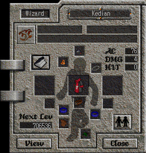

|  |
If you double click on yourself or another Aisling, the following window will pop up.
From this window, a number of different things can be learned. Double Clicking on Yourself The window in the example is the result of clicking on yourself. "Next Level" indicates how much experience is required for you to level up. If you are in a motley, it will appear in the box under your class. The "people holding hands" icon indicates your group status. If you click on it, you can toggle your group status (it will change to a lone person), meaning, whether or not you will join a group. To create a group, you simply double click on the Aisling you want to add to your group, and click the people icon. If it is a person by himself, that Aisling will not automatically join your group. The purpose of grouping is to share experience in battle and join up to smite monsters. Members of a group share experience gained from killing monsters. The Book Icon - This will allow you to view your own, or another Aisling's, legend. The legend is explained in detail in the next section. Item and Equipment - The screen will also display your equipment. You'll notice i'm wearing a cloak, necklace, some rings, and boots. To take off equipment, double click on it, and it will be removed. Stats - There are also some useful stats here. AC stands for armor class. Lower numbers are better; this is an indicator of how strong your armor is, and how well it defends you. DAM is a measure of how much damage you do with your equipped weapon; higher numbers are better. HIT is a measure of your chance of successfully attacking; higher numbers are better here as well. Information on another Aisling The screen's functionality changes a bit when you click on another Aisling. The only thing you will be able to do is click the "book" icon to see his or her legend, and click the group icon to add them to a group. |